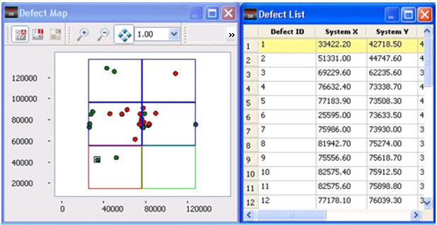
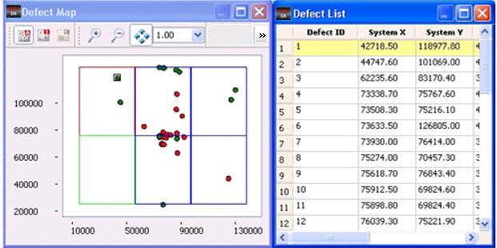

You can rotate
defect inspection data by 90°, 180° and 270° in Calibre DefectReview.
Procedure
- In the Calibre DefectReview
window, click Transform > Rotate.
- In the Rotate sub-menu, select the
degree (90, 180, 270) to rotate the defect inspection data,
or Reset to reset the
rotation.
Note: The rotation is always around
the center of the reticle.
- Figure 1 illustrates the contents of the Defect
Map and Defect List before rotation and Figure Figure 2 illustrates the contents after a 90-degree
rotation. The system coordinates in the Defect List are updated
after rotation.
Figure 1. Inspection Before
Applying Rotation
Figure 2. Inspection After Rotating
90 Degrees